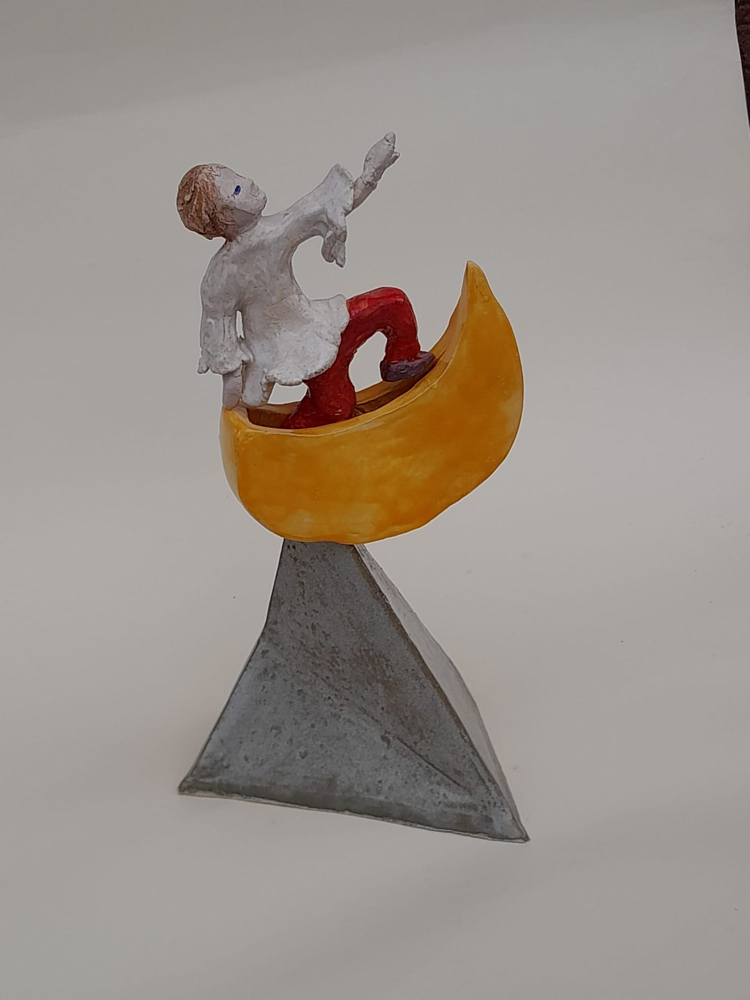
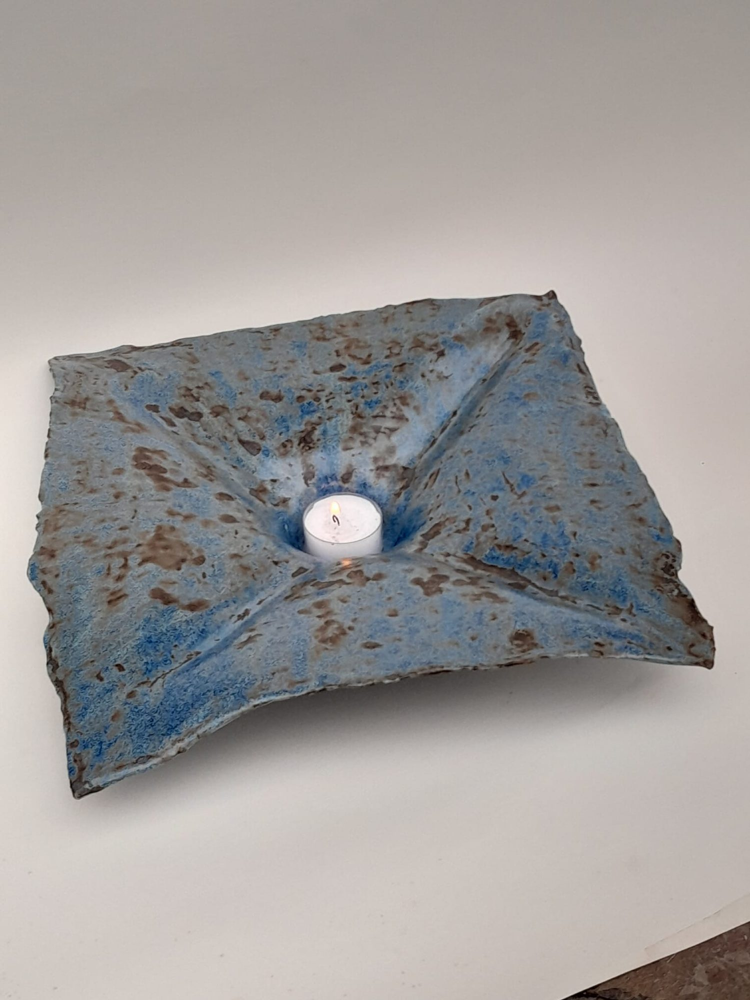
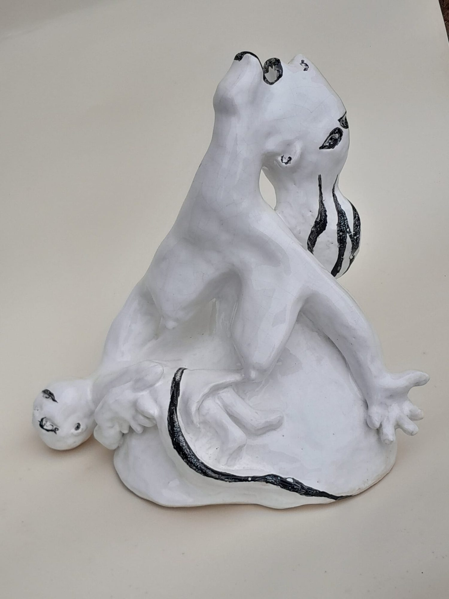
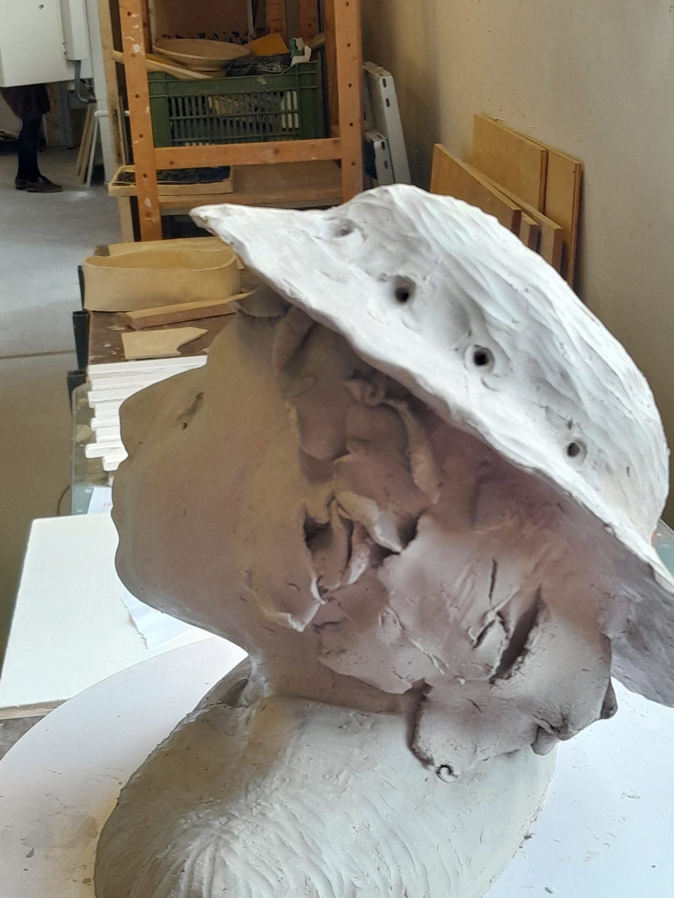
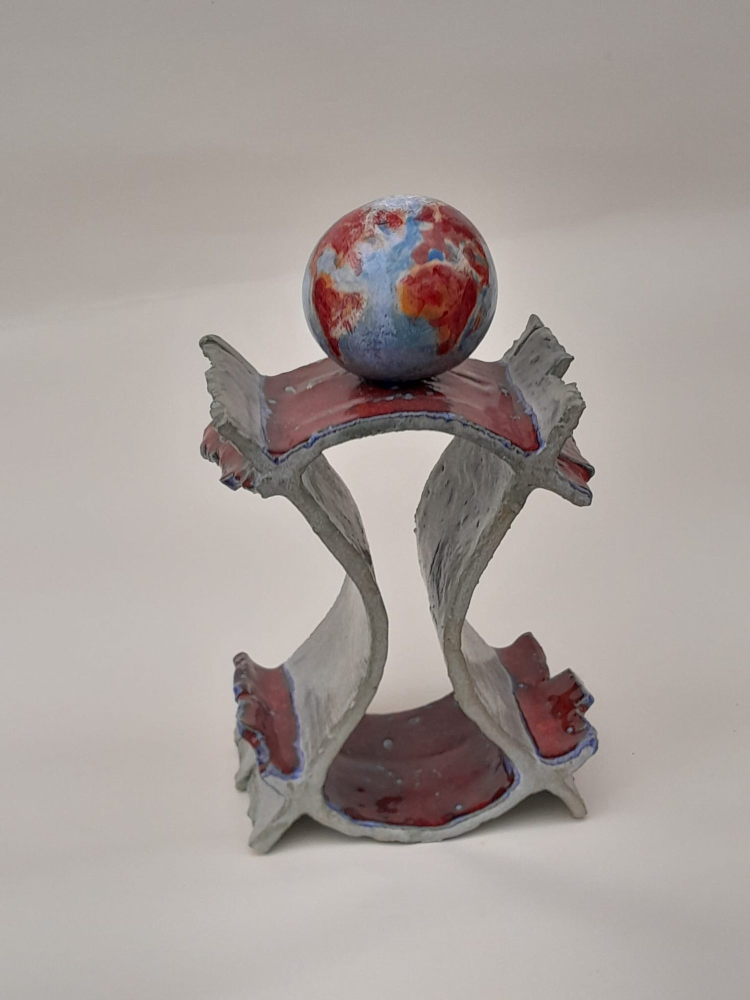

Joie de la merAcryliqueRire d'enfant sur la plage, reflets bleutés.
Peinture & Céramique · Belgique
Artiste belge, Patricia Veranneman travaille la peinture et la céramique à partir de ce qui a déjà vécu — une photographie ancienne, un objet oublié, un fragment de mémoire — qu'elle déplace et recompose jusqu'à devenir autre chose.
Entre mémoire & matière
Le temps n'est jamais figé : il se dépose, se fissure, se transforme et recommence.











Peintures accrochées aux cimaises, sculptures posées sur leurs socles — les œuvres de Patricia Veranneman ont été présentées dans des galeries et espaces culturels en Belgique et à l'étranger.
La photographie devient peinture. Le fragment devient sculpture. La matière garde les marques de sa transformation.

Commande spécifique et intervention dans l'espace architectural — les pièces de Patricia dialoguent avec le bâti et le paysage, investissant l'extérieur comme prolongement naturel du travail en atelier.
Quatre sphères en grès émaillé, une par élément — la Terre, l'Eau, l'Air, le Feu — posées sur les pilastres d'une grille d'entrée.


À travers la peinture et la céramique, Patricia Veranneman explore les traces du temps, les fragments de mémoire et les transformations de la matière. Son travail part souvent de ce qui existe déjà : une photographie ancienne, un objet oublié, un élément trouvé, une forme qui porte en elle une histoire. Ces fragments ne sont pas reproduits — ils sont déplacés, transformés, recomposés, jusqu'à devenir autre chose.
Ses peintures s'appuient parfois sur d'anciennes photographies : images familiales, scènes anonymes, souvenirs dont il ne reste qu'une trace. Le passage de la photographie à la peinture introduit une distance. Les contours s'effacent, des détails disparaissent ; ce qui était une image précise devient une impression, une présence, parfois une absence.
La céramique aborde ces mêmes questions par la matière et le volume. Des éléments anciens, trouvés ou porteurs d'une histoire, sont assemblés à la terre et confrontés à une forme nouvelle : ni conservés intacts, ni tout à fait effacés. Les pièces portent alors plusieurs temps à la fois, entre vestige et création.
Patricia Veranneman